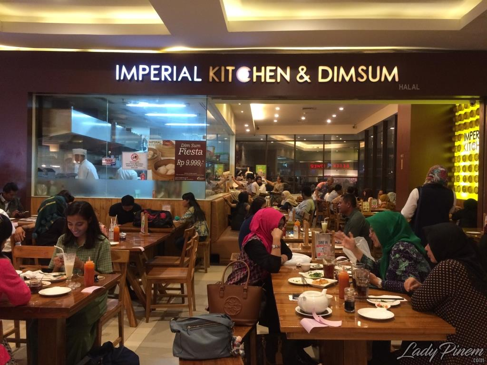

Wisata Rekreasi & Kuliner Unggulan Kota Depok
Taman Bunga Wiladatika
Taman seluas 15 ha merupakan tempat wisata di depok yang cocok untuk dewasa ataupun keluarga dengan anak-anak
DetailTaman Wisata Pasir Putih

Taman Wisata Pasir Putih merupakan salah satu waterpark di Kota Depok yang menjadi tempat favorit untuk rekreasi keluarga.
DetailImperial Kitchen Depok
Ingin makan enak sekalian jalan-jalan? Langsung saja datang ke lantai 2, Margo City Mall di kawasan Jalan Margonda Raya.
Detail